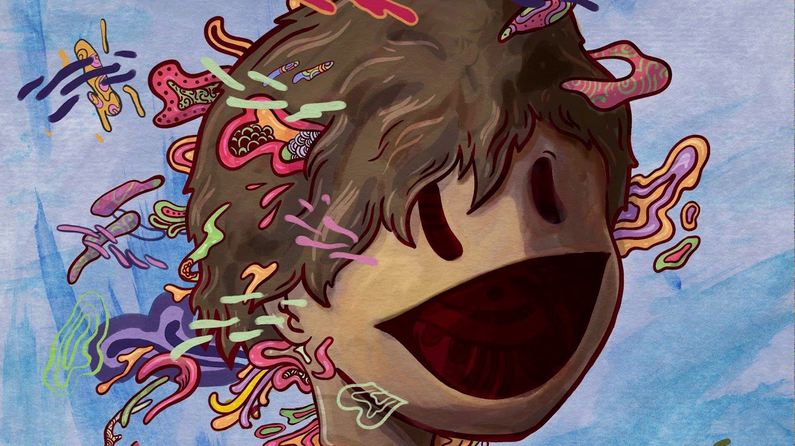

Good Kid 4 (2024) è l'album che ha segnato la svolta, la cover From The start (che prenderebbe spunto da Cupid di Laufey) ha avuto un successo clamoroso, la band è riconosciuta per quello attualmente.

Good Kid 4 contiene From The Start che è il brano più famoso della band.
| # | Titolo | Durata |
|---|---|---|
| 1 | Bubbly | 3:07 |
| 2 | From The Start | 2:30 |
| 3 | Summer | 2:27 |
| 4 | Break | 2:32 |
| 5 | Dance Class | 2:56 |
| 6 | Premier Inn/td> | 3:32 |
Formazione: Nick Frosst (voce), Jonathon Kereliuk (batteria), Michael Kozakov (basso), David Wood e Jacop Tsafatinos (chitarra).